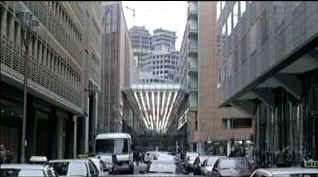

| Road to the Awards/A-,A- |
| Atom/1999/139m/WS, FS |
Watching these short films was such an unexpected delight. I can't imagine why I am usually resistant to shorts. Short stories were always treasured reading. Now that Atom Films has exposed me to several of 1999's Academy Award nominated short films, I will relish the opportunity of finding more gems of this ilk. The collection includes four live action short films and three animated shorts.
 |
| Exquisite images in Kleingeld. ©Atom Films |
The highlight of the compilation for me was My Mother Dreams the Satan's Disciples in New York. The breezy twenty minute film brings a Midwestern Mom for a visit New York City.. Staying in her daughter's East Village apartment, Mom winds up getting a very unique perspective of New York. Her encounter with the motorcycle gang, "Satan's Disciples," is the heart
of the film, but with economical strokes, the film delivers an abundance of pleasures other than those generated by the bikers. Cheers to director Barbara Schock.
Kleingeld is an existential fifteen minute vision with comic overtones and deeper reverberations. With almost no dialogue, the film examines what happens when a vagrant washes an executives car without being asked. Cinematically, the camera work and polish of the film are elegant. The opening features a simply magnificent pan down from high between the space of office skyscrapers reflected in
the windshield of a car and up and over the car into a startling cityscape. Marc-Andrea Bochert directs with a keen insight into the material. Presented in 1.85 widescreen. No English titles are provided for the German dialogue, nor are they needed. A fine minimalist score effectively mirrors the action.
Major and Minor Miracles, twenty-five minutes, centers around possible divine presence in a small Swedish town. An emissary from the Vatican arrives to investigate the miraculous possibilities surrounding a young boy and a the task of liaison falls to a local priest. Seductively pensive, the film looks carefully at the motivations that drive people. Marcus Olsson takes some tough material to
unexpected places from the Vatican to a cold small village. A mixture of English and Swedish, White English subtitles overlap the 1.66 slightly into the letterbox It's a trip worth taking.
Killing Joe is the longest short film at thirty-nine minutes and probably the one shot with the most self-conscious stylistic visual style. It's an aggressive tour-de-force of storytelling with added mood from the black and white photography. Joe integrates an excellent vintage pop song soundtrack that helps define period and character. Director Medhi Norowzian makes the most of Chris Fallon's entertaining
script.
Of the three animated works only My Grandmother Ironed the King's Shirt took hold of my imagination. The simple animation is charming and the story of a woman in Norway during World War II is educational without being overly pedantic. Creator Torill Kove does a wonderful job of making the appropriate decisions for the short. Adults and kids alike will enjoy this one.
The DVD images are transferred with consistent good work. Black and white images in Killing Joe are lustrous with excellent contrast. Film grain is fine and consistent. Colors are rich in each presentation and sound is clean. Sharp images are not marred by edge enhancement or color bleeding.
Selections from the feature archive include articles on Akira Kurosawa, Frank Darabont, Blonde Bimbos, Hollywood Street Gangs, or Vietnam: The Hollywood Pariah, and many more...
A Western is a Western is a Western
Place or time it's still a Western from John Ford's Drums Along the Mohawk to John Sturges' Bad Day at Black Rock.
The Movie Poster Archive includes extensive poster images from the films of stars like Susan Hayward, Kirk Douglas, Katharine Hepburn and many more. Our featured star is Edward G. Robinson

 Kinoeye Archive
Kinoeye Archive
This is a resource of all content-rich materials on the web relating to Central and East European cinema. The ultimate aim of the Kinoeye Archive is to provide a near-as-damn-it definitive index of intelligent and thoughtful English-language analysis of Central and Eastern European cinema on the web.
 Lovers of Hong Kong movies will relish MC4's site that includes reviews and other information about the Hong Kong movie scene.
Lovers of Hong Kong movies will relish MC4's site that includes reviews and other information about the Hong Kong movie scene.

Reviews of affordable remote controls in the market place. Codes and tips as well.
 ETEKNet is the web's only 24-hour, totally FREE source for all your home theater, DVD, Dreamcast, PC, and Networking tech support needs!
ETEKNet is the web's only 24-hour, totally FREE source for all your home theater, DVD, Dreamcast, PC, and Networking tech support needs!